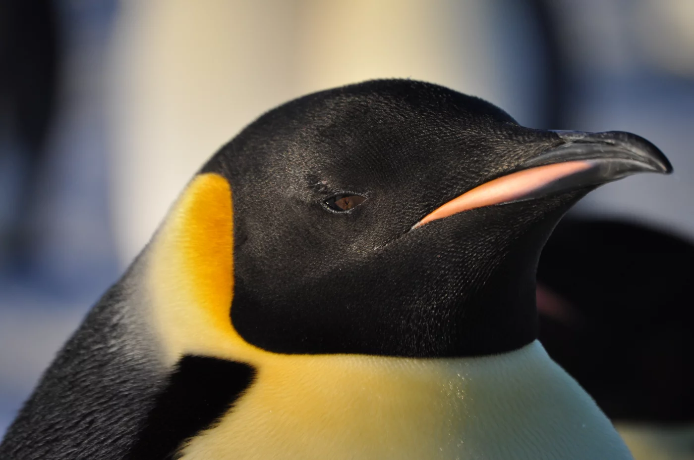

Etudiant
Mon discord: myxime#4769
GitHub: github.com/Maxirrx
je m'appel Maxime j'ai 18 ans, je vis dans un endroit perdu pour les personnes qui viennent de Lyon qui s'appel Saint Maurice de Beynost.
joueur anciennement joueur d'akali mid 300 000 point j'asspire au gold avant ma fin de carriere
j'aime bien le codage meme si je suis pas forcement bon dedant, j'asspire a
apprendre et a m'améliorer dans le domaine. je sais aussi jonglé a 3 balles.
Anciennement en BUT GACO a Saint Etienne (mais c'etais pas ma tasse de thé) j'ai préferer me réorienter en informatique
(pour mieux comprendre les discussion de mes potes)
et j'aime bien
Le Manchot empereur est un oiseau endémique de l'Antarctique, est le plus grand et le plus lourd de tous les manchots. Le mâle et la femelle ont un plumage similaire
et sont de même taille, atteignant jusqu'à 122 cm de hauteur pour une masse qui varie entre 20 et 40 kg. Le dos et la tête sont noirs et le ventre blanc, le haut de
la poitrine jaune clair ; deux marques jaune vif au niveau des oreilles sont très visibles. Comme les autres manchots, il est incapable de voler. Ses ailes raides et aplaties
et son corps profilé sont particulièrement adaptés à l'habitat marin.

"YO"